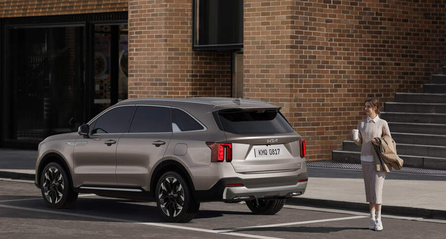

Spesifikasiya
| Ölçülər |
(mm) |
| Uzunluq |
4,916 |
| En |
1,900 |
| Hündürlük |
1,696 |
| Təkərlərarsı Baza |
2,816 |
Xüsusiyyətlər
Mükəmməl Təhlükəssizlik
- Parklanma zamanı qəzadan qorunma(PCA)
- Gizli zonalarda toqquşmadan qorunma assintenti(BSA)
- Parklanma zamanı qəzadan qorunma(PCA)
- Ətrafa nəzarət monitoru(SVM)
- İntellektual kruiz-kontrol(SCC)
